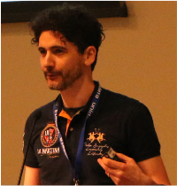

Advancing autonomous, trustworthy, and reproducible AI agents across the edge–cloud–HPC continuum for scientific discovery at scale.
Agentic AI is rapidly moving from "chat with tools" prototypes to autonomous systems that can reason, plan, coordinate, and act across complex digital research ecosystems. For the eScience community, this shift represents the emergence of a new control plane for computational and data-driven research.
Agents can request allocations, launch ensembles, steer workflows, move PB-scale datasets, trigger experiment/compute co-scheduling, and generate decisions that impact scientific validity — spanning the computing continuum from instruments and autonomous laboratories to simulations, data centers, cloud systems, and leadership-class HPC.
Recent closed-loop campaigns have revealed gaps in hallucination detection and mitigation, scheduling visibility, energy accounting, and reproducibility guarantees. At scale, even minor errors or blind spots can escalate into megawatt-hour waste, irreproducibility, and compromised scientific validity.
AGENT4SC provides a dedicated forum to advance scalable architectures, cross-continuum coordination, evaluation frameworks, verification and mitigation strategies, provenance, and observability mechanisms before agentic systems become embedded in production research workflows.
Agents reshaping how researchers generate, validate, share, and reuse data and knowledge across distributed infrastructures.
How to bound agent actions, ensure auditability, define safety controls, and support human-in-the-loop oversight for long autonomous campaigns.
Scalable databases, vector stores, caching layers, provenance services, and knowledge graphs — performant and auditable under high concurrency.
AGENT4SC is intended to evolve into a recurring forum aligned with eScience's mission and the rapidly growing agentic AI community.
Data and execution models and design principles for agentic AI beyond LLMs at scale.
Agentic AI for cross-facility science spanning instruments, simulations, and learning across distributed infrastructure.
Planning and reasoning under extreme compute and data constraints for sustained scientific campaigns.
Databases, vector stores, caching layers, and knowledge graphs designed for agentic systems at scale.
Approval policies and escalation paths for long agentic workflow runs requiring steering and oversight.
Auditability, reproducibility, monitoring, tracking, debugging, and observability of agentic systems at scale.
Reliability and accountability mechanisms for agentic workflows operating in production scientific environments.
Verification, failure detection, mitigation, and recovery techniques for large-scale agent-driven systems.
Performance analysis and modeling for agentic systems under realistic scientific workloads.
Interfaces, schemas, protocols, frameworks, and execution models for cross-platform agent coordination.
Allocation and resource awareness under agent-driven control across heterogeneous systems.
Lessons from large-scale scientific deployments of agentic systems in production environments.
AGENT4SC invites original research papers, position papers, and experience reports on the systems foundations required to operationalize agentic AI in large-scale scientific environments. We encourage submissions from academia, national laboratories, industry, and operational HPC centers.
We welcome contributions on any of the key topics listed above, including but not limited to:
Papers must be submitted through EasyChair. When submitting the paper, make sure you select the track 1st Workshop on Agentic AI for Large-scale Science.
| Time | Activity |
|---|---|
| 9:00 – 9:15 | Opening & Welcome Remarks Opening |
| 9:15 – 9:30 | Paper Presentation 1 Paper |
| 9:30 – 9:45 | Paper Presentation 2 Paper |
| 9:45 – 10:00 | Paper Presentation 3 Paper |
| 10:00 – 10:15 | Paper Presentation 4 Paper |
| 10:15 – 10:30 | Paper Presentation 5 Paper |
| 10:30 – 11:00 | Coffee Break Break |
| 11:00 – 12:30 |
Interactive Panel Discussion
Panel
Structured discussion from concrete scenarios (allocation requests, data movement spikes, unsafe tool invocation, hallucination risks) to actionable patterns (approval policies, escalation paths, safe shutdown, observability, audit trails). Audience participation encouraged. |
Arthur Holly Compton Distinguished Service Professor of Computer Science at UChicago and Distinguished Fellow at Argonne. Pioneer of distributed and data-intensive computing with applications spanning materials science, climate, and biomedicine.
Chief Data Science Officer at SDSC, specializing in scientific workflows and scalable AI systems. Founder of the WIFIRE Program and lead of the NSF National Data Platform initiative.

Associate Professor at the University of Trento, specializing in data science, scientific data management, and AI in distributed, cloud, and parallel computing environments.
Assistant Computer Scientist at ANL (MCS), focusing on data management for HPC+AI workflows and agentic AI systems, with emphasis on vector databases, provenance-aware architectures, and trustworthy, scalable data infrastructures across heterogeneous environments. Ph.D. from Université Grenoble Alpes.
agueroudji@anl.govTech lead, senior software engineer and research scientist of intelligent data and AI platforms to accelerate scientific discovery. 15+ years of experience at IBM Research, ORNL, SLAC, and UFRJ. Focus on scalable, low-latency, observable, provenance- and metadata-first architectures. Author of 50+ papers and holder of 10+ USPTO patents.
souzar@ornl.gov